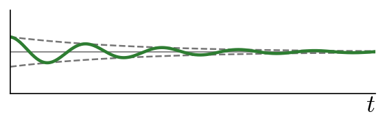
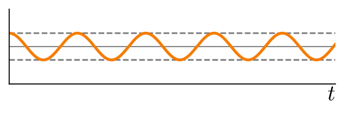
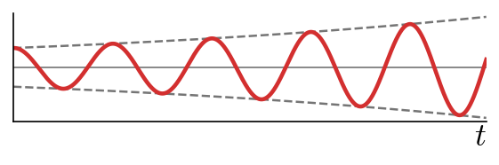
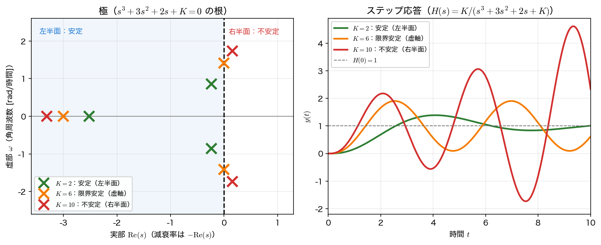

安定性とラウス・フルビッツ判別
第7回までで、伝達関数 \(H(s)\) とその極が応答を決めることを見た。本ページでは、それを 安定性の判定 に使う。極が左半面にあるかどうかを、特性方程式の根を実際に解かずに調べる ラウス・フルビッツの安定判別法 を導入する。
安定性と極の位置
第6回では入力のない応答を調べ、極がすべて左半面にあれば応答が \(0\) へ減衰することを見た。第7回からは入力のあるシステムを扱っている。入力のあるシステムでは、安定を次のように決める。
有界な入力（大きさがある値を超えない入力）に対して、出力も有界になるとき、システムは 安定 であるという。有界な入力に有界な出力（bounded-input bounded-output）の頭文字をとって BIBO 安定 とも呼ぶ。例として、ステップ入力 \(u(t)\) は有界である。安定なシステムなら、ステップ応答は発散しない。この定義を \(h(t)\) の条件に言い直す厳密な議論には、本講義では立ち入らない。本講義で扱う \(H(s)\)（分子・分母が \(s\) の多項式）なら、安定かどうかは極の位置だけで決まる。この後、極の位置が分かれば、出力を計算しなくても安定かどうかが判定できることを見る。
伝達関数の極 \(s=-\sigma+i\omega\) は、\(h(t)\) に次の形の項を生む（第6・7回）。
\(\omega\) [rad/時間] は角周波数、\(\phi\) は位相である。\(\omega=0\) の実極なら、項は \(e^{-\sigma t}\) になる。項が減衰するか増大するかは、極の実部 \(-\sigma\) の符号だけで決まる。実部が負（\(\sigma>0\)）なら \(e^{-\sigma t}\to0\)、正（\(\sigma<0\)）なら \(e^{-\sigma t}\to\infty\) である。\(\sigma\) は第6回と同じく減衰率で、極の実部は \(-\sigma\) である。\(s=\sigma+i\omega\) と書いたときの \(\sigma\)（実部そのもの）とは符号が逆になる。
| 極の位置 | 実部 \(-\sigma\) | \(h(t)\) の項 | 判定 | 典型的な形 |
|---|---|---|---|---|
| 左半面 | 負 | 減衰する | 安定 |  |
| 虚軸上 | \(0\) | 振幅が一定のまま振動し続ける | 限界安定（安定に含めない） |  |
| 右半面 | 正 | 増大する | 不安定 |  |
図は \(\omega=2.5\) の \(e^{-\sigma t}\cos\omega t\) で、上から \(\sigma=0.25,\,0,\,-0.08\) である。灰色の破線は振幅 \(\pm e^{-\sigma t}\) を表す。3 つの図は軸の範囲をそろえてある。
つまり 安定 ⇔ すべての極が左半面にある。極が 1 つでも右半面にあれば不安定である。
虚軸上の単純な極 \(\pm i\omega\) は持続振動を生む。第6回ではこれを 限界安定 と呼んだ。入力がなければ、振幅は一定のまま発散しない。しかし、同じ角周波数の入力 \(\sin\omega t\)（有界）を入れると、出力の振幅が時間とともに増え続ける（共振）。たとえば \(H(s)=\dfrac{1}{s^2+1}\)（極 \(\pm i\)）に \(x(t)=\sin t\)（\(X(s)=\dfrac{1}{s^2+1}\)）を入れると
となり、\(t\cos t\) の項が増え続ける。そこで、限界安定は安定に含めない。虚軸上の重極は、第6回で見たとおり入力がなくても発散する。
特性方程式
伝達関数 \(H(s)=\dfrac{N(s)}{D(s)}\) を 既約形（\(N\) と \(D\) の共通因子を約分した形）で書いたとき、その極は分母 \(=0\) すなわち
の根である（約分で消える根は極ではないので、先に既約形にしておく）。\(D(s)\) を 特性多項式 と呼ぶ。安定かどうかは、この多項式の根がすべて左半面にあるかで決まる。
問題は、次数が上がると根を手で求めるのが難しいことである。3 次・4 次でも因数分解できるとは限らず、調整できる定数（後で扱うゲイン \(K\)）を含むと、根を \(K\) の式で書くのはさらに難しい。そこで、根を求めずに、根の実部の符号だけを係数から判定する 方法が欲しくなる。それが次のラウス・フルビッツの判別法である。
ラウス・フルビッツの安定判別法
特性多項式
の係数から表を作り、根の実部の符号を調べる。3 次の特性多項式 \(a_3s^3+a_2s^2+a_1s+a_0\) を例にとり、3 段に分けて作り方を示す。
ラウス表 ①：係数を 2 行に並べる
係数を高いべきから、2 行に互い違いに並べる。
1 行目は \(a_3\), \(a_1\)（1 つおき）、2 行目は \(a_2\), \(a_0\)（残り）である。左の \(s^3\), \(s^2\) は行の名前で、\(s\) のべきが 1 つずつ下がる。この 2 行から、下の行を決まった規則で埋めていく。この表を ラウス表 と呼ぶ。
ラウス表 ②：たすき掛けで次の行を作る
直上 2 行の先頭の列と次の列で、たすき掛けの差 \(a_2a_1-a_3a_0\) を作る。それを直上の行の先頭 \(a_2\) で割ったものが、\(s^1\) 行の先頭 \(b\) になる。
\(s^1\) 行の右隣は、使う係数がない（\(0\) とみなす）ので \(0\) になる。
ラウス表 ③：最後の行
\(s^2\) 行と \(s^1\) 行に同じ規則を当てる。
表は \(s^0\) 行で終わる。\(n\) 次なら \(n+1\) 行になる。左端の列（ここでは \(a_3,\,a_2,\,b,\,a_0\)）を 第 1 列 と呼ぶ。
ラウス・フルビッツの判定規則
第 1 列の符号から、次のように安定かどうかが分かる。
ラウス・フルビッツの判定規則
- 第 1 列の符号変化の回数 ＝ 右半面にある極の個数。
- したがって 安定 ⇔ 第 1 列がすべて同符号（通常は正） で、符号変化が \(0\) 回。
- 必要条件：安定なら、すべての係数 \(a_i\) が同符号（正）。
- 係数に \(0\) や符号違いがあれば、表を作るまでもなく安定ではない（不安定または限界安定）。
根を 1 つも解かずに、係数の四則演算だけで安定かどうかが判定できる。なお、表の途中で第 1 列に \(0\) が出ると、次の行で \(0\) で割ることになり、この手順では表を続けられない。その場合の扱いには、本講義では立ち入らない。
例：ゲイン \(K\) を含む系
定数 \(K>0\) を含む 3 階の微分方程式
を例にとる。次ページのフィードバック系から出てくる方程式である。零状態（\(y(0)=y'(0)=y''(0)=0\)）では、微分の公式をくり返し使うと \(\mathcal{L}[y''']=s^3Y(s)\) となる。両辺を変換すると \((s^3+3s^2+2s+K)\,Y(s)=K\,X(s)\) なので、伝達関数は
である。\(K\) は外から選んで調整できる定数で、ゲイン と呼ぶ。極は特性方程式
の根で、\(K\) を変えると動く。安定でいられる \(K\) の範囲を、根を解かずに求める。\(a_3=1\), \(a_2=3\), \(a_1=2\), \(a_0=K\) を上のラウス表に入れると
となる。安定 ⇔ 第 1 列がすべて正 ⇔ \(\dfrac{6-K}{3}>0\) かつ \(K>0\)、すなわち
がゲイン \(K\) の 安定範囲 である。
\(K>6\) では第 1 列の符号が \(+,+,-,+\) と 2 回変わる。右半面に極が 2 つあり、不安定 になる。\(K=6\) では \(s^1\) 行が \(0\) になる。このとき因数分解できて
となり、極は \(-3\) と \(\pm i\sqrt2\) である。虚軸上の \(\pm i\sqrt2\) が、角周波数 \(\sqrt2\) の持続振動を生む（限界安定）。この境目の \(K=6\) を 安定限界 と呼ぶ。
Python で確かめる。数値計算には NumPy、記号計算には sympy（第6回）を使う。\(K\) には正の仮定を付ける。\(s\) は複素変数なので仮定を付けない。以下のコードは、すべてこの続きで動く。
import numpy as np
import sympy as sp
s = sp.symbols("s") # 複素変数なので仮定を付けない
K = sp.symbols("K", positive=True) # 調整できる定数 K>0
ラウス表を作る関数 routh_first_column を用意する。係数を \(s\) の高いべきから並べたリスト \([a_n,\dots,a_0]\) を受け取り、第 1 列を返す。
sp.zeros(行数, 列数)は、要素がすべて \(0\) の sympy の行列を作る。R[i, j]で \(i\) 行 \(j\) 列の要素を読み書きする（番号は \(0\) から）。widthは表の列数である。//は割り算の商（小数を切り捨てた値）を返す。- 最初の 2 行に係数を互い違いに入れ、3 行目からは「たすき掛けの差を直上の先頭で割る」規則で埋める。
top・pivは直上 2 行の先頭の要素で、3 次の \(s^1\) 行なら \(a_3\) と \(a_2\) にあたる。pivで割る。 sp.simplify(式)は、式を簡単な形に整える。返す前に第 1 列の各要素を整える。- 第 1 列に \(0\) が出る場合は扱わない簡易版である。
def routh_first_column(coeffs):
"""係数 [a_n, ..., a_0] からラウス表の第1列を返す（簡易版）"""
n = len(coeffs) - 1
width = (n + 2) // 2
R = sp.zeros(n + 1, width)
for i in range(width):
if 2*i < len(coeffs): R[0, i] = coeffs[2*i]
if 2*i+1 < len(coeffs): R[1, i] = coeffs[2*i+1]
for r in range(2, n + 1):
top, piv = R[r-2, 0], R[r-1, 0]
for c in range(width - 1):
R[r, c] = (piv*R[r-2, c+1] - top*R[r-1, c+1]) / piv
return [sp.simplify(R[r, 0]) for r in range(n + 1)]
例の分母 \(s^3+3s^2+2s+K\) の係数を、\(K\) を記号のまま入れる。
\(K\) を記号のまま入れたので、第 1 列が \(K\) の式で返る。2 - K/3 \(=\dfrac{6-K}{3}\) は、手で作った \(s^1\) 行と一致する。\(K<6\) で正になる。
次は \(K\) に数値を入れて根（極）を求め、この判定と照らし合わせる。
np.roots(係数)は、\(s\) の高いべきから並べた係数の多項式の根を返す。ここでは分母の根、つまり極を求める。np.round(配列, 3)は、小数第 3 位に丸める。sp.factor(式)は、式を因数分解する。\(K=6\) の特性多項式に当てる。- 数値の \(K\) はループ変数
kに入れ、記号Kを上書きしないようにする。
for k in (2, 6, 10): # 数値の K で根（極）を求める
poles = np.roots([1, 3, 2, k])
print(f"K={k:2d}: 極={np.round(poles, 3)}")
print(f" 最大実部={poles.real.max():+.3f}")
print("K=6 の因数分解:", sp.factor(s**3 + 3*s**2 + 2*s + 6))
K= 2: 極=[-2.521+0.j -0.239+0.858j -0.239-0.858j]
最大実部=-0.239
K= 6: 極=[-3.+0.j 0.+1.414j 0.-1.414j]
最大実部=+0.000
K=10: 極=[-3.309+0.j 0.154+1.732j 0.154-1.732j]
最大実部=+0.154
K=6 の因数分解: (s + 3)*(s**2 + 2)
実際の根を見ると、
- \(K=2\)（\(<6\)）… 最大実部 \(-0.239<0\) で全極が左半面 → 安定
- \(K=6\) … 極が \(-3\) と \(\pm i\sqrt2\)（\(\sqrt2\approx1.414\)）。
sp.factorでも \(s^3+3s^2+2s+6=(s+3)(s^2+2)\) となり、\(\pm i\sqrt2\) が 虚軸上 → 限界安定（角周波数 \(\sqrt2\) の持続振動） - \(K=10\)（\(>6\)）… 実部 \(+0.154>0\) の極が 2 つ右半面にある → 不安定
と、ラウス・フルビッツの判定（\(0<K<6\)、\(K>6\) で右半面に極が 2 つ）と一致する。根を陽に解かずに、係数だけから安定範囲が出せた。
ステップ応答で確かめる
\(H(0)=K/K=1\) なので、安定ならステップ応答は \(1\) に落ち着く（第7回の DC 利得）。scipy.signal で \(K=2,6,10\) のステップ応答を計算し、\(1\) からのずれ \(\lvert y-1\rvert\) の最大を、\(5<t\le10\) と \(10<t\le15\) で比べる。scipy.signal は第4回の ss.welch と同じモジュールで、ss の名前で読み込む。伝達関数からステップ応答を計算する関数がある。
ss.TransferFunction(分子, 分母)は伝達関数を作る。分子・分母は、\(s\) の高いべきから並べた係数のリストである。ss.step(系, T=時刻の配列)は、時刻の配列とその各時刻でのステップ応答を組で返す。時刻は返り値の 1 つ目にも入っているので、_で受けて捨てる。
import scipy.signal as ss
t = np.linspace(0, 15, 3001)
first = (t > 5) & (t <= 10) # 5<t<=10
second = t > 10 # 10<t<=15
for k in (2, 6, 10):
H = ss.TransferFunction([k], [1, 3, 2, k])
_, y = ss.step(H, T=t)
d = np.abs(y - 1) # H(0)=1 からのずれ
a, b = d[first].max(), d[second].max()
print(f"K={k:2d}: ずれの最大 {a:.3f} → {b:.3f}")
\(K=2\) ではずれが縮んで \(1\) に落ち着き、\(K=6\) では同じ大きさの振動が続き、\(K=10\) では振動が大きくなって発散する。\(K=10\) でも \(H(0)=1\) だが、不安定なので \(1\) には落ち着かない（第7回の「不安定なら \(H(0)\) にならない」）。
極とステップ応答を描く
極とステップ応答を図に描く。描画には、第1回から使っている matplotlib を plt の名前で読み込む。plt.subplots(1, 2) は、左右に並んだ 2 つのグラフの枠 ax1, ax2 を返す。左の ax1 に極を、右の ax2 にステップ応答を描く。axvline は縦線を、axhline は横線を引く。時刻の配列 t（\(0\le t\le15\)）を使い回し、横軸は set_xlim(0, 10) で \(0\le t\le10\) に絞る。縦軸は、発散する \(K=10\) の応答がこの区間で切れない範囲を set_ylim で指定する。図のラベルは、Colab でも文字化けしないよう英語と数式で書く（第1回）。
import matplotlib.pyplot as plt
fig, (ax1, ax2) = plt.subplots(1, 2, figsize=(10, 4))
for k, c in ((2, "tab:green"), (6, "tab:orange"), (10, "tab:red")):
poles = np.roots([1, 3, 2, k])
ax1.plot(poles.real, poles.imag, "x", color=c) # 左：極
H = ss.TransferFunction([k], [1, 3, 2, k])
_, y = ss.step(H, T=t)
ax2.plot(t, y, color=c, label=f"$K={k}$") # 右：応答
ax1.axvline(0, color="black", ls="--") # 虚軸
ax2.axhline(1, color="gray", ls="--") # H(0)=1
ax1.set_xlabel("Re $s$"); ax1.set_ylabel("Im $s$")
ax1.set_title("poles")
ax1.grid(alpha=0.3)
ax2.set_xlim(0, 10); ax2.set_ylim(-2.2, 4.9)
ax2.set_xlabel("$t$"); ax2.set_ylabel("$y(t)$")
ax2.set_title("step response")
ax2.legend(); ax2.grid(alpha=0.3)
fig.tight_layout()
plt.show()
次の図は、同じ計算を日本語のラベルを付けて描き直したものである。

ラウス・フルビッツの使いどころ
ラウス・フルビッツの判別法は、上の例のように特性方程式が 調整できる定数（ゲイン \(K\)）を含む ときに役に立つ。根を \(K\) の式で書くのは 3 次でも大変だが、ラウス表なら第 1 列を \(K\) の式のまま書ける。安定範囲 \(0<K<6\) が、不等式として直接得られる。設計では「安定でいられるゲインの上限」を知りたいことが多い。
まとめ
- 有界な入力に対して出力も有界になるとき、システムは 安定（BIBO 安定）。本講義で扱う \(H(s)\) では、安定 ⇔ すべての極が左半面（実部 \(<0\)）。
- 右半面に極があれば発散して不安定。虚軸上の単純な極は持続振動を生む 限界安定 で、安定には含めない。
- 極は 特性方程式 \(D(s)=0\) の根。次数が上がると手で解くのは難しいので、根を求めずに 符号だけ判定したい。
- ラウス・フルビッツの安定判別法：ラウス表の 第 1 列の符号変化の回数 ＝ 右半面の極の個数。安定 ⇔ 第 1 列がすべて同符号。
- 例 \(s^3+3s^2+2s+K=0\) では安定範囲が \(0<K<6\)。\(K=6\) で持続振動、\(K>6\) で不安定と、実際の根・ステップ応答と一致する。
次は、この特性方程式を生み出す フィードバック制御 の構造そのものに進み、ゲインで極を動かして定常偏差と過渡応答を設計する。